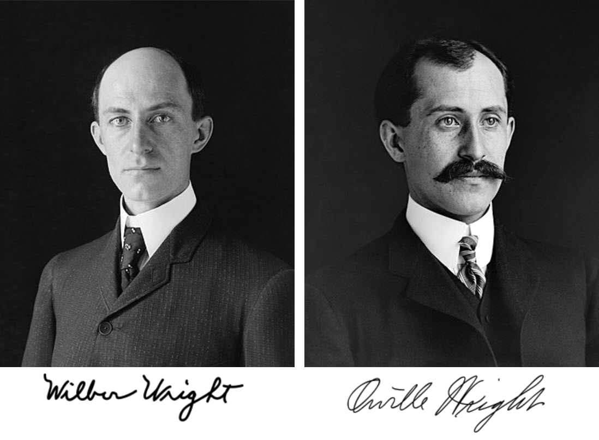

De äldre flygplanen
pionjärer inom luftfarten, var enkla i sin design men banbrytande för sin tid. Med sina trä- och metallkonstruktioner revolutionerade de sättet människor reste och kommunicerade över långa avstånd. Dessa tidiga flygplan lade grunden för dagens moderna luftfartsteknik och inspirerade fortsatt innovation inom flygindustrin.

Bröderna Wright
pionjärer inom flygteknik skapade världens första framgångsrika flygplan år 1903. Deras modell, Flyer I, lyfte från marken i Kitty Hawk, North Carolina och revolutionerade mänsklighetens förståelse för flygning. Deras bedrift banade väg för den moderna luftfarten och inspirerade generationer av flygare och ingenjörer.

Nya flygplan
representerar en banbrytande framtid för luftfarten. Genom avancerad teknik och materialvetenskap möjliggör de snabbare, mer bränsleeffektiva och bekvämare flygningar. Deras moderna design och avancerade system stärker säkerheten och effektiviteten i luftfarten, samtidigt som de öppnar nya möjligheter för global rörlighet och samarbete.